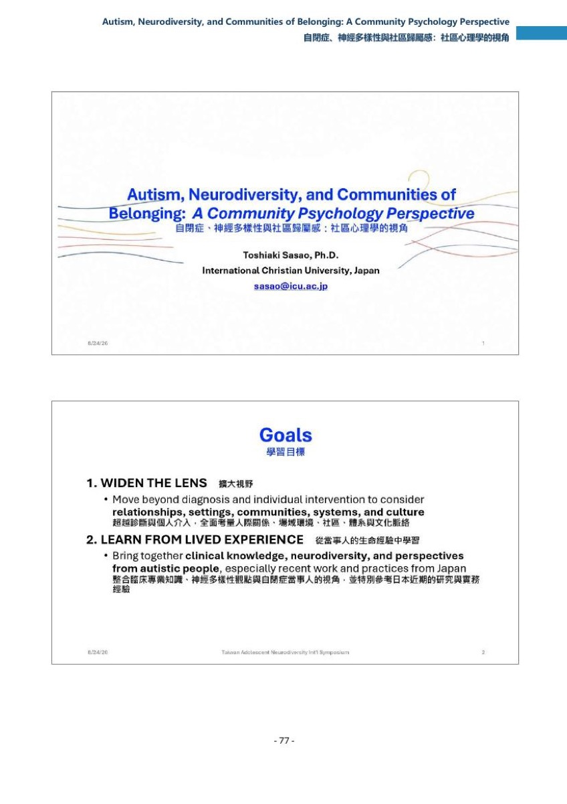
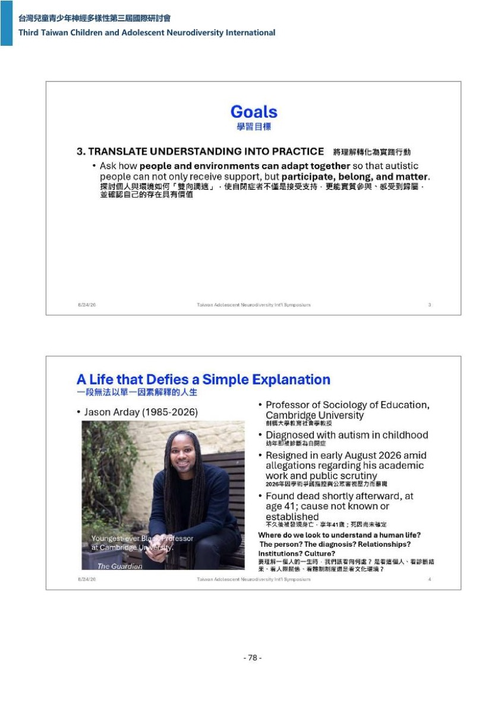
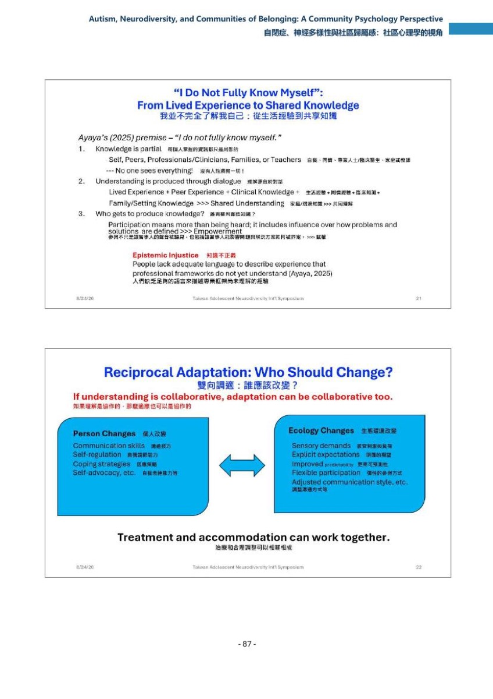

Autism, Neurodiversity, and Communities of Belonging: A Community Psychology Perspective
自閉症、神經多樣性與社區歸屬感：社區心理學的視角
主持人開場即宣告提問走 QR Code 表單。
頁面內常見標記：【推論】／【推定】＝記錄者依現有資料的推測，不是講者原話；（口譯）＝現場口譯員的中文，不是講者本人的話；【校正】＝逐字稿明顯聽錯、記錄者改用正確寫法但保留原始聽寫。
要點
- [00:00:00]（中文遍｜中文原音） 主持人以講者職稱開場，並在講者上台前就把提問管道定為 QR Code 表單——這是本場沒有現場 Q&A 的制度性原因（見六節）。依據：主持人逐字為「讀教大學社群心理學榮譽教授」（
_zh_t.srt:3，段#1，00:00:00,000–00:00:03,560）＋「他要談的是自閉症、神經多樣性、社群歸屬感、社群心理學的一個視角」（_zh_t.srt:15，段#4，00:00:10,280–00:00:16,100）＋「那一樣大家有認為的問題」（_zh_t.srt:27，段#7）＋「可以在QR Code表單裡面提出來」（_zh_t.srt:31，段#8，迄 00:00:27,140）＋「那是不是讓我們掌聲歡迎」（_zh_t.srt:35，段#9，迄 00:00:30,220）。00:00:30,220–00:00:52,000 兩遍皆無任何字幕（反查指令與輸出見驗收（五）#3），研判為掌聲與上台的空檔。 - [00:00:52]（英文遍＋口譯佐證 zh#28，晚 61.3 秒／基準句
_en.srt:47） 講者開場先劃定自己的位置：他以社區心理學家而非醫師或醫療專業人員的身分發言，目的不是取代臨床知識或介入，而是加上另一個鏡頭；他並自嘲對口譯員來說是惡夢，所以今天會守著講稿。依據：英文遍作「Okay, good afternoon, I want to thank all the organizers and the interpreter for today.」（_en.srt:23，段#6，00:00:52,000–00:01:07,180）；兩遍各自單段逐字命中「especially when I talk in a situation where people don't understand me」（_en.srt:35／_zh_t.srt:43）＋「so I try to be very faithful to the script that I have today」（_en.srt:43／_zh_t.srt:55）＋「rather than as a physical physician or medical professional」（_en.srt:47，段#12，00:01:49,100–00:01:59,960／_zh_t.srt:63，段#16，00:01:55,140–00:02:03,460）；核心提問句英文遍作「So my purpose here today is not to replace clinical knowledge or intervention, but rather I'd like to add another lens.」（_en.srt:51，段#13）＋「what changes when we understand autism not only within」（_en.srt:63／_zh_t.srt:83 同窗）＋「but also within the ecology in which the person lives」（_en.srt:67／_zh_t.srt:87 同窗）。口譯譯為「那我今天來跟大家分享的是以一位社群心理學家的身份」（口譯，_zh_t.srt:111，段#28，00:03:01,300–00:03:07,300）＋「而不是一位醫生或是臨床治療師」（口譯，_zh_t.srt:115，段#29）＋「那我今天來這邊演講的故地也不是要去取代臨床的知識或是介入」（口譯，_zh_t.srt:119，段#30）＋「當我們試著去用生態系統來瞭解這位自閉症患者的時候,我們會有什麼樣的改變?」（口譯，_zh_t.srt:159，段#40，00:03:42,160–00:03:53,160）。 - [00:04:07]（英文遍＋口譯佐證 zh#70，晚 59.0 秒／基準句
_en.srt:103） 講者給出三個目標：擴大視野（診斷與個人介入重要，但只是圖像的一部分，還要看人際關係、學校、職場、家庭、社區、體系與文化）、從當事人的生命經驗學習（含日本近期研究）、把理解轉化為實踐（不預設調適一定來自自閉症者，而問人與環境如何一起調適）。依據：中文遍保留英語作「I have 3 goals today」（_zh_t.srt:167，段#42，00:04:07,160–00:04:09,660；英文遍同一句作So I have three goals today.，_en.srt:87，段#22，起點 00:03:38,880 見〇節（3））；兩遍各自單段逐字命中「individual interventions are important」（_en.srt:91／_zh_t.srt:179）＋「and the perspectives of autistic people themselves.」（_en.srt:99／_zh_t.srt:223）＋「And the third, I want to translate that understanding into practice.」（_en.srt:103，段#26，00:04:39,860–00:04:45,860／_zh_t.srt:227，段#57，00:04:40,600–00:04:45,440）＋「Rather than assuming that adaptation has always come from the autistic person,」（_en.srt:107／_zh_t.srt:231）；收束句英文遍作「Ultimately I want to move from a discussion with support towards the discussion of participation, belonging and mattering.」（_en.srt:111，段#28）。口譯譯為「那第三個的話」（口譯，_zh_t.srt:279，段#70，00:05:44,900–00:05:45,900）＋「就是這樣理解轉換為實踐的行動」（口譯，_zh_t.srt:287，段#72）＋「與這個人怎麼樣可以去互相,雙向去適應」（口譯，_zh_t.srt:303，段#76）＋「而是我們可以把討論擴及到怎麼樣更讓這個人有參與感、歸屬感以及發揮價值感」（口譯，_zh_t.srt:311，段#78，迄 00:06:17,880）。對應投影片 p78 下半與 p79 上半，手冊 B 逐字為「Widen the Lens擴大視野」與「Translate Understanding into Practice將理解轉化為實踐行動」（p-078.jpg／p-079.jpg，手冊 B :65–:66）。 - [00:06:25]（英文遍＋口譯佐證 zh#97，晚 72.0 秒／基準句
_en.srt:159） 講者以劍橋教育社會學教授 Jason Arday 的一生破題，並明確自我設限：他不是把這位當事人當臨床個案，也不是主張自閉症或任何單一事件解釋了發生的事；他要問的是——理解一個人的一生時，我們該看向哪裡。依據：英文遍作「Now, some of you may have heard of Jason Rd. He became a professor of sociology of education at Cambridge and was widely recognized as the youngest black professor at Cambridge.」（_en.srt:159，段#40，00:06:25,680–00:06:39,540）＋「He had been diagnosed with autism in childhood. Earlier this year, he resigned」（_en.srt:163，段#41）＋「amid allegations concerning his academic work and intense public scrutiny shortly afterward」（_en.srt:167，段#42）；自我設限句兩遍各自單段逐字命中「not suggesting that autism or any single event explains what happened.」（_en.srt:183，段#46／_zh_t.srt:371，段#93）；提問句英文遍作「Where do we look when we try to understand a human life?」（_en.srt:195，段#49，00:07:26,900）＋「The person, a diagnosis, relationships, institutions, or culture?」（_en.srt:199，段#50）＋「The answer is always interacting over time.」（_en.srt:203，段#51）。口譯譯為「那他是建曹大學史上最年輕的黑人教授」（口譯，_zh_t.srt:387，段#97，00:07:51,500–00:07:55,500）＋「那他在小時候被診斷出有自閉症」（口譯，_zh_t.srt:391，段#98）＋「他於41歲的時候就被發現身亡」（口譯，_zh_t.srt:415，段#104）＋「那死因是尚未證實是什麼原因」（口譯，_zh_t.srt:419，段#105）＋「然後我也不是想要用自閉症來解釋他的死因」（口譯，_zh_t.srt:435，段#109）＋「看人際關係,看體制制度,還是要看文化環境,那我覺得我的答案是,其實這些所有的因素都是互相交替的。」（口譯，_zh_t.srt:459，段#115，00:08:47,500–00:09:01,500）。對應投影片 p79 下半，手冊 B 逐字為「A Life that Defies a Simple Explanation／一段無法以單一因素解釋的人生」，案例列「Jason Arday」與「1985-2026」、「享年41歲」（p-079.jpg，手冊 B :67）。姓名與時間點有兩遍不一致，見待確認#6。 - [00:09:01]（英文遍＋口譯佐證 zh#133，晚 57.2 秒／基準句
_en.srt:243） 講者把我們知道的與我們有時以為自己知道的並排：自閉症真實存在、個別需求重要、專業知識有價值、調適有時很有幫助——但這些事實都不表示診斷解釋了一個人的全部，不表示困難全在個體身上，不表示適應功能在每個環境都一樣；而且最重要的是，看起來成功不代表過得好。依據：兩遍各自單段逐字命中「distinction between what we know and what we sometimes assume」（_en.srt:223／_zh_t.srt:463）＋「none of those facts means that the diagnosis explains the whole person」（_en.srt:235，段#59，00:09:26,200–00:09:31,800／_zh_t.srt:483，段#121，00:09:25,500–00:09:32,380；金句 S05_1）＋「that every difficulty lies inside the individual」（_en.srt:239／_zh_t.srt:487）＋「without functioning will look the same across every setting」（_en.srt:239／_zh_t.srt:491）＋「looking successful does not necessarily mean doing well」（_en.srt:243，段#61，00:09:40,440–00:09:49,440／_zh_t.srt:495，段#124，00:09:40,540–00:09:48,460；金句 S05_2）；轉場句英文遍作「So if the individual alone is not enough, then where else should we look?」（_en.srt:247，段#62，00:09:51,440）。口譯譯為「有一個人也許他看似是很成功的」（口譯，_zh_t.srt:531，段#133，00:10:46,680–00:10:49,380）＋「但是並表示他其實現在過得很好」（口譯，_zh_t.srt:535，段#134）＋「那所以一個診斷的結果會告訴我們一些重要的事實」（口譯，_zh_t.srt:539，段#135）＋「但是他沒有辦法告訴我們每一件事情關於這個人」（口譯，_zh_t.srt:543，段#136）＋「那我們應該還要看向何方呢」（口譯，_zh_t.srt:551，段#138，迄 00:11:07,620）。對應投影片 p80 上半，手冊 B 逐字結論為「A diagnosis tells us something important – but not everything」（p-080.jpg，手冊 B :68）。 - [00:11:10]（英文遍＋口譯佐證 zh#186，晚 68.3 秒／基準句
_en.srt:399） 社區心理學的起點是人在脈絡中運作：同一個人在不同環境的表現可能天差地別，而那個落差本身就是有用的資訊；由此推出四個概念——生態（困難發生在哪裡、涉及哪些人）、預防（哪些次要問題可以在變成危機前預防）、賦權（誰的目標與知識算數）、參與與系統變革（這個人周遭有哪些可以改變）；問題於是從哪裡出了錯換成這裡發生了什麼、可以改變什麼。依據：兩遍各自單段逐字命中「community psychology begins with a very simple principle」（_en.srt:275／_zh_t.srt:555，段#139，00:11:10,420–00:11:15,420）＋「what specifically does community psychology contribute」（_en.srt:391／_zh_t.srt:691）＋「would like to summarize this field of community psychology through four ideas」（_en.srt:395／_zh_t.srt:695）；落差即資訊的兩句英文遍作「And the crucial point here is that the same person may function very differently in different environments.」（_en.srt:299，段#75，00:11:47,100）＋「And when functioning changes substantially from one setting to another, that difference itself is useful information.」（_en.srt:303，段#76）；四概念英文遍逐項作「The first is ecology.」（_en.srt:399，段#100，00:13:35,100–00:13:39,100）／「And the second principle is prevention.」（_en.srt:411，段#103）／「And the third is empowerment.」（_en.srt:419，段#105）／「And the fourth is participation and system change.」（_en.srt:427，段#107）；換問法的三句英文遍作「Now this changes the question we ask.」（_en.srt:443，段#111）＋「Instead of asking only what's wrong,」（_en.srt:447，段#112）＋「we also ask what is happening here and what could change?」（_en.srt:451，段#113，迄 00:14:36,840）。口譯譯為「第一個的話社群心理學關注生態學」（口譯，_zh_t.srt:743，段#186，00:14:47,440–00:14:51,440）＋「那第二個的話是預防」（口譯，_zh_t.srt:755，段#189）＋「第三個是父權」（口譯，_zh_t.srt:771，段#193；研判為〔賦權〕之聽寫誤，見待確認#8）＋「那第四個是我們要如何參與系統變革」（口譯，_zh_t.srt:787，段#197）＋「我們不再只問說這個人出了什麼問題,我們要問的是這邊發生了什麼事情,然後我們可以做出哪些改變。」（口譯，_zh_t.srt:815，段#204，00:15:39,420–00:15:48,420）。對應投影片 p80 下半與 p81 上下半，手冊 B 逐字結論為「The same person may function very differently in diverse environments」（p-080.jpg，手冊 B :69）與四要素條列（p-081.jpg，手冊 B :70–:71）。 - [00:15:50]（英文遍＋口譯佐證 zh#223，晚 79.0 秒／基準句
_en.srt:551） 講者以一位 14 歲自閉症學生開始拒學為例，示範「擴大視野」實際會多看到什麼：只看個人會看到感官敏感、焦慮、對突發變動的困難；把鏡頭拉開會再看到霸凌、與教師的誤解、因出勤引發的家庭衝突、吵雜教室、無法預測的作息、隱性社會規則、僵化的出勤政策——介入選項也隨之擴張（學生需要因應策略、教師需要諮詢、教室需要安靜空間、指令需要更明確、學校政策需要更有彈性）。他把這稱為人與環境的適配。依據：兩遍各自單段逐字命中「old autistic student begins to refuse in schools.」（_en.srt:535，段#134，00:16:15,060–00:16:19,280／_zh_t.srt:831，段#208，00:16:11,420–00:16:19,420）＋「may also discover bullying」（_en.srt:551／_zh_t.srt:847）＋「perhaps the school policy itself needs greater flexibility.」（_en.srt:579／_zh_t.srt:867）＋「student and environmental ecology matter.」（_en.srt:583／_zh_t.srt:871）＋「Community psychology often describes this as a person」（_en.srt:587，段#147，00:17:24,920–00:17:32,740／_zh_t.srt:875，段#219，00:17:24,540–00:17:31,540）＋「So with that ecological kind of framework in mind, I now want to return directly to autism itself.」（_en.srt:591，段#148／_zh_t.srt:879，段#220）；不弱化診斷的那句英文遍作「Whitening the lens does not mean weakening diagnosis, it means asking what diagnosis can or cannot help us.」（_en.srt:595，段#149；Whitening 研判為〔Widening〕之聽寫誤，見待確認#8）。口譯譯為「身邊會出現被同儕霸凌的狀況」（口譯，_zh_t.srt:891，段#223，00:18:08,540–00:18:11,240）＋「那我們的介入方式其實也可以跟著擴張」（口譯，_zh_t.srt:931，段#233）＋「所以學生本人還有他身處的這個環境都非常的重要」（口譯，_zh_t.srt:975，段#244）＋「社群心理學呢會把這個關係稱之為人和環境的適配性」（口譯，_zh_t.srt:979，段#245，00:19:11,040–00:19:18,060）＋「其實他反而是在告訴我們診斷可以和不能告訴我們什麼事情」（口譯，_zh_t.srt:995，段#249，迄 00:19:37,860）。對應投影片 p82 上下半（p-082.jpg，手冊 B :72–:73，四層各配可能發現什麼與因應對策兩欄）。本段另有一句插話：講者說他還沒跟美國那兩位講者談過，但前一天發現彼此互補——兩遍各自單段逐字命中「if you notice, I haven't talked to these two wonderful speakers from the US, but we realized yesterday that they and I compliment」（_en.srt:519，段#130，00:15:36,800–00:16:03,720／_zh_t.srt:819，段#205，00:15:50,420–00:16:03,420；英文遍該處作 complimented、中文遍作 compliment，故斷言字串止於 compliment）。 - [00:20:01]（英文遍＋口譯佐證 zh#266，晚 59.8 秒／基準句
_en.srt:683） 自閉症是有臨床意義的診斷，但一個診斷並不描述一種人：自閉症者在溝通、認知、感官經驗、適應功能與所需支持上差異極大。講者以日本弘前市的 5 歲幼童流行病學研究為例——被判定為 ASD 的 87 名兒童中，只有約 11.5% 沒有其他經評估的神經發展狀況，多數同時有 ADHD、發展協調障礙、智能障礙或臨界智能功能。依據：兩遍各自單段逐字命中「is a meaningful clinical diagnosis, but one diagnosis does not describe one kind of person」（_en.srt:667，段#167，00:19:41,240–00:20:09,240／_zh_t.srt:999，段#250，00:20:01,580–00:20:09,560；金句 S05_3——本句是全檔唯一起點差 >20 秒者（20.34 秒、終點差 0.32 秒、時窗仍重疊），引用與認證一律以中文遍段界為時窗，詳見金句表該列）＋「tistic people differ in communication, cognition, sensory experience, adaptive functioning, and a lot of support needed」（_en.srt:671／_zh_t.srt:1003；英文遍作 Autistic、中文遍作 Altistic，故斷言字串自 tistic 起算）＋「among the 87 children identified with ASD, only about 11.5」（_en.srt:683，段#171，00:20:32,700–00:20:40,700／_zh_t.srt:1015，段#254，00:20:32,560–00:20:40,560）＋「any other assessed neurodevelopmental condition」（_en.srt:687／_zh_t.srt:1019）＋「ADHD, developmental coordination disorder, intellectual disability, borderline」（_en.srt:691／_zh_t.srt:1023）；研究出處英文遍作「A useful example comes from Saito and Kone's population study in Hirosaki, Japan.」（_en.srt:675，段#169，00:20:19,220）。口譯譯為「那這邊想要引用就是日本紅前市」（口譯，_zh_t.srt:1055，段#264，00:21:33,320；研判為〔弘前市〕之聽寫誤）＋「就是在87個有診斷出ASD的孩子裡面」（口譯，_zh_t.srt:1063，段#266，00:21:40,460–00:21:44,460）＋「只有11.5%的兒童沒有其他神經發育的障礙」（口譯，_zh_t.srt:1067，段#267）＋「但是他們的發展輪廓會是很不一樣的」（口譯，_zh_t.srt:1095，段#274）。對應投影片 p83 上半，手冊 B 逐字為「Saito et al. (2020)」與「Among children identified with ASD, only 11.5% have ASD without another neurodevelopmental (NDD) condition」（p-083.jpg，手冊 B :74）。87 這個數字只出自講者口述與口譯，投影片與手冊 B 全文皆未印（枚舉見驗收（五）#4），見待確認#4；地名兩遍不一致見待確認#2。 - [00:22:36]（英文遍＋口譯佐證 zh#297，晚 50.6 秒／基準句
_en.srt:767） 「自閉症」這個詞同時服務好幾種目的：它是診斷、是取得支持服務的資格、是研究用的科學分類，對某些人也是社會身分與社群歸屬的一部分。因此該問的是誰有權定義它、為了什麼目的——答案會因為你在診斷、提供服務、做研究還是談身分而不同；重點不是哪個定義對，而是同一個詞承擔了不同功能。依據：兩遍各自單段逐字命中「there is another interesting complication here」（_en.srt:755／_zh_t.srt:1119）＋「it can determine eligibility for support」（_en.srt:759／_zh_t.srt:1131）＋「for some people it is also a part of social identity」（_en.srt:763／_zh_t.srt:1139）＋「Alex Zambrovsky and her colleagues」（_en.srt:767，段#192，00:22:58,040–00:23:05,780／_zh_t.srt:1147，段#287，00:22:57,820–00:23:01,620）；收束兩句英文遍作「The point here is not that one definition is necessarily correct and others are wrong.」（_en.srt:783，段#196）＋「The point is that the same word can serve several different functions.」（_en.srt:787，段#197，迄 00:23:28,520）。口譯譯為「那自閉這兩字他可以是一個診斷」（口譯，_zh_t.srt:1163，段#291，00:23:35,420）＋「所以Alexandrovsky醫師」（口譯，_zh_t.srt:1187，段#297，00:23:56,420–00:23:59,420）＋「就是是誰有權利來定義自閉症」（口譯，_zh_t.srt:1199，段#300）＋「然後呢為什麼要來定義它」（口譯，_zh_t.srt:1203，段#301）＋「那它可能會有不一樣的功能」（口譯，_zh_t.srt:1235，段#309，迄 00:24:40,020）。對應投影片 p83 下半，手冊 B 逐字為「Who gets to decide what autism means and for what purposes?」並標註「Alexandrovsky et al. (2025)」（p-083.jpg，手冊 B :75）。研究者姓名兩遍與投影片不一致，見待確認#5。 - [00:24:40]（英文遍＋口譯佐證 zh#325，晚 64.9 秒／基準句
_en.srt:831；標頭時戳錨點＝_zh_t.srt:1239，段#310，00:24:40,020–00:24:44,220，逐字「這是特別重要當我們說到 neurodiversity」） 全場的和解命題：神經多樣性不必然等於不治療。臨床照護能減輕痛苦、處理共存狀況、支持溝通與功能；神經多樣性觀點提醒我們尊重神經差異、維護尊嚴與自主、避免不必要的正常化；社區心理學再加上人與環境的適配、參與、歸屬與次級傷害的預防。三者不必競爭，可以互補——講者在此預告了後面會用的詞：雙向調適（reciprocal adaptation），調適不必只從人流向環境。依據：兩遍各自單段逐字命中「does not have to mean no treatment」（_en.srt:831，段#208，00:24:44,220–00:24:48,100／_zh_t.srt:1243，段#311，00:24:44,220–00:24:47,720；英文遍句首作 Neurodiversity、中文遍作 neurodiversity，故斷言字串自 does 起算）＋「perspective reminds us to respect neurological differences」（_en.srt:839／_zh_t.srt:1251）＋「psychology adds attention to the person environment fit」（_en.srt:843／_zh_t.srt:1259）＋「these perspectives do not need to compete」（_en.srt:851／_zh_t.srt:1271）；互補與預告句英文遍作「They can complement one another.」（_en.srt:855，段#214）＋「is reciprocal adaptation.」（_en.srt:863，段#216，00:25:32,300）＋「Adaptation does not necessarily have to flow from one,」（_en.srt:871，段#218）＋「only from the person to the environment.」（_en.srt:875，段#219，迄 00:25:45,060）。口譯譯為「神經多樣性不代表完全不需要治療介入」（口譯，_zh_t.srt:1299，段#325，00:25:53,020–00:25:56,740）＋「那比如說臨床的照護就可以幫助這個當事人減輕痛苦」（口譯，_zh_t.srt:1303，段#326）＋「那這些觀點並不是互相排斥的」（口譯，_zh_t.srt:1343，段#336）＋「就是雙向調適」（口譯，_zh_t.srt:1355，段#339）＋「其實環境也可以反過來適應這個人」（口譯，_zh_t.srt:1367，段#342，迄 00:26:52,500）。對應投影片 p84 上半（p-084.jpg，手冊 B :76，三欄對照表 Clinical Care／Neurodiversity／Community Psychology）。 - [00:27:18]（英文遍＋口譯佐證 zh#378，晚 64.6 秒／基準句
_en.srt:951；標頭時戳錨點＝_zh_t.srt:1399，段#350，00:27:18,460–00:27:20,460） 規範決定差異會不會變成障礙：什麼算合宜的眼神接觸、對話節奏、情緒表達、獨立程度、對團體慣例的遵守——這些規範之所以重要，是因為差異不是被觀察，而是被解讀；同一個行為在不同場域會被讀成粗魯、不成熟、不合作、異常或失序。接著是本場最尖銳的一句：文化不製造自閉症，但社會規範會影響神經差異會不會變成障礙。依據：兩遍各自單段逐字命中「uncooperative, unusual, or disordered」（_en.srt:939／_zh_t.srt:1411）＋「And then another question appears」（_en.srt:947／_zh_t.srt:1423）＋「Culture does not create autism」（_en.srt:951，段#238，00:27:42,780–00:27:51,780／_zh_t.srt:1435，段#359，00:27:42,460–00:27:45,460；金句 S05_4）；規範清單英文遍作「And then we need to consider norms, what counts as appropriate eye content?」（_en.srt:907，段#227，00:26:32,980–00:27:02,960；eye content 研判為〔eye contact〕之聽寫誤）＋「What is expected timing of conversation?」（_en.srt:911，段#228）＋「How much conformity to group routines?」（_en.srt:923，段#231）；解讀句英文遍作「These norms matter because differences」（_en.srt:927，段#232）＋「are not simply observed, they are interpretive.」（_en.srt:931，段#233）——這一句在英文遍跨兩段、在中文遍作 interpreted（_zh_t.srt:1403），兩遍用字不同，不併為同一引號字串；轉場句英文遍作「I now want to shift toward the lived experience, especially some recent work from Japan.」（_en.srt:959，段#240）。口譯譯為「他們都是每個人解讀的方式不一樣」（口譯，_zh_t.srt:1475，段#369，00:28:28,560）＋「可能會被視為是粗乳不成熟」（口譯，_zh_t.srt:1483，段#371）＋「還是說我們會要求當事人要去隱藏這個與他人不一樣的地方」（口譯，_zh_t.srt:1507，段#377）＋「文化本身並不會創造出自閉」（口譯，_zh_t.srt:1511，段#378，00:28:56,360–00:28:58,960）＋「是有可能讓這些神經多樣性變成一個障礙」（口譯，_zh_t.srt:1519，段#380，迄 00:29:07,240）。對應投影片 p84 下半（p-084.jpg，手冊 B :77）。 - [00:29:23]（英文遍＋口譯佐證 zh#390，晚 59.5 秒／基準句
_en.srt:991） 日本當事者的聲音：Harada 與同事訪談了七位成年後才確診的日本自閉症者，浮現的主題是——長年感覺自己不同卻不明白原因、被誤解與霸凌汙名、確診同時帶來釋懷與不確定；而他們要的不只是更好的社交技巧，還有被認可、被接納與歸屬。接著講者轉向偽裝與掩飾：外界看到的是合宜的社會行為、眼神接觸、出席率、工作表現；看不到的是精疲力盡、焦慮、持續的自我監控與害怕被拒絕。該問的不是這個人能不能適應，而是這個適應能不能持續、代價是什麼——而那是臨床問題，也是生態問題。依據：兩遍各自單段逐字命中「Now, Dr. Harada and his colleagues」（_en.srt:991，段#248，00:29:17,780–00:29:30,780／_zh_t.srt:1531，段#383，00:29:23,580–00:29:26,080）＋「interviewed seven late」（_en.srt:991／_zh_t.srt:1535；英文遍作 late-diagnosed、中文遍作 late diagnosed，故斷言字串止於 late）＋「Now, several themes emerged out of their discussions or interviews.」（_en.srt:995／_zh_t.srt:1539）＋「Participants described feeling different, sometimes for many years,」（_en.srt:999／_zh_t.srt:1543）；診斷雙面與需求句英文遍作「But diagnosis could also bring uncertainty」（_en.srt:1007，段#252，00:29:53,400–00:30:00,960）＋「their social skills, they also want to recognition, acceptance, and belonging.」（_en.srt:1015，段#254）＋「This reminds us that what the person needs is not always visible from the diagnostic level.」（_en.srt:1019，段#255）；偽裝段英文遍作「Now, this leads to basking and camouflaging.」（_en.srt:1035，段#259，00:31:25,720；basking 研判為〔masking〕之聽寫誤）＋「Exhaustion, anxiety, constant self-monitoring, fear of rejection.」（_en.srt:1055，段#264）＋「So perhaps the important question is not simply can this person adapt, but is this adaptation sustainable, and what is it causing the person?」（_en.srt:1059，段#265，00:31:55,720–00:32:11,720；causing 研判為〔costing〕之聽寫誤，投影片印 costing）＋「And that question is both clinical and ecological.」（_en.srt:1063，段#266）。口譯譯為「那參與面談的這些自閉診者」（口譯，_zh_t.srt:1559，段#390，00:30:30,320–00:30:33,040）＋「他說他小時候就感覺到自己是從小跟人家不一樣」（口譯，_zh_t.srt:1567，段#392）＋「他們希望的其實不只是進步的社交技能」（口譯，_zh_t.srt:1611，段#403）＋「他們也渴望被接納、被認可」（口譯，_zh_t.srt:1615，段#404）＋「他在內心深處他是有焦慮感」（口譯，_zh_t.srt:1703，段#426，00:32:38,860）＋「精疲力盡失去自己的真實身份感」（口譯，_zh_t.srt:1707，段#427）＋「這個適應有辦法長久維持下去嗎」（口譯，_zh_t.srt:1731，段#433）＋「這個人必須付出什麼樣的代價」（口譯，_zh_t.srt:1739，段#435，迄 00:33:06,040）。對應投影片 p85 上下半，手冊 B 逐字為「What people need is not always visible from the diagnosis」與「Masking and Camouflaging: Is this adaptation sustainable, and what is it costing the person?」（p-085.jpg，手冊 B :78–:79）。 - [00:33:12]（英文遍＋口譯佐證 zh#445，晚 60.5 秒／基準句
_en.srt:1091；標頭時戳錨點＝_zh_t.srt:1751，段#438，00:33:12,360–00:33:22,920） 從關係觀點重新定位溝通障礙，再落到方法：東京大學的熊谷（Kumagaya）本身是肢體障礙者，他邀請大家重想——傳統模型把溝通缺陷放在自閉症者身上，關係模型則說溝通發生在兩個人之間，而社會規範決定誰的風格被當成標準；困難可能不只來自個體特質，而來自不同溝通風格的互動。若溝通是關係性的，那麼對溝通困難的理解也應該是關係性的，自閉症者本人就該參與這個理解的生產。 這帶出日本的當事者研究（Tojisha-Kenkyu）：約 2001 年起於北海道浦河 Bethel House，最初在精神疾病經驗者之間進行，後來擴及自閉症與神經多樣性；歷程由同儕主導、共同協作，當事人探究自身經驗、辨識反覆出現的模式、發展共同語言、摸索因應之道。講者再以一位 15 歲學生說小組討論時突然說不出話為假設案例走一遍流程，結論是理解改變了介入標的——從社交技巧不足換成人與環境的哪種不適配產生了這個困難。依據：關係觀點英文遍作「So Dr. Kumagaya at the University of Tokyo is a physically disabled person.」（_en.srt:1091，段#273，00:32:54,720–00:33:21,700；中文遍同窗雖亦為英語，但全小寫、句讀不同，不計為同窗同一字串，見待確認#10）＋「Communication happens between an Autistic person and another person」（_en.srt:1107，段#277）＋「The difficulty may arise not only from the characteristics of one individual, but also」（_en.srt:1115，段#279）＋「And if that is true, autistic people themselves should participate in producing an understanding.」（_en.srt:1131，段#283，迄 00:34:14,700）；當事者研究英文遍作「Tojisha refers to, refers roughly to the person directly concerned and affected.」（_en.srt:1159，段#290）＋「Kenkyu means research, inquiry, investigation.」（_en.srt:1163，段#291）＋「started at Urakawa Bethel House in Hokkaido, Northern Ireland, around 2001,」（_en.srt:1171，段#293；Northern Ireland 與投影片矛盾，見待確認#7）＋「The process is peer-led and collaborative.」（_en.srt:1187，段#297）；四原則的末項兩遍各自單段逐字命中「and change can potentially occur on both sides, the person and environment.」（_en.srt:1215，段#304，00:36:42,780–00:36:57,780／_zh_t.srt:1879，段#470，00:36:48,600–00:36:57,600）；15 歲案例英文遍作「i suddenly cannot speak during group discussion it's a familiar situation we often find that」（_en.srt:1319，段#330，00:39:07,640）＋兩遍各自單段逐字命中「deciding when it is safe to enter the conversation」（_en.srt:1359／_zh_t.srt:2043）＋「So understanding changes the intervention target.」（_en.srt:1383，段#346）＋「We move from poor social skills to what person environment fit is producing this difficulty.」（_en.srt:1387，段#347，迄 00:40:33,600）。口譯譯為「名叫東京大學的Kumagaya教授」（口譯，_zh_t.srt:1779，段#445，00:34:22,200–00:34:27,140）＋「他本身也是一位生障者」（口譯，_zh_t.srt:1783，段#446）＋「他是發生在兩個人之間的談話」（口譯，_zh_t.srt:1807，段#452）＋「日本現在有一個研究方法,叫做當事者研究」（口譯，_zh_t.srt:1843，段#461，00:35:28,800）＋「那這是一個由同儕主導共同協作的實踐歷程」（口譯，_zh_t.srt:1899，段#475，00:37:41,240）＋「首先是這個當事人他就成為知識的生產者」（口譯，_zh_t.srt:1927，段#482）＋「就是除了當事人要改變,環境應該也要跟著改變」（口譯，_zh_t.srt:1947，段#487）＋「但是當事者研究會緩下來,重新檢視一下這個過程」（口譯，_zh_t.srt:2083，段#521，00:40:55,200）＋「而是說這個人以環境的適配之下」（口譯，_zh_t.srt:2187，段#547，迄 00:42:31,500）。對應投影片 p86 上下半與 p87 上下半，手冊 B 逐字為「Communication happens between people, and social norms determine whose communication style is treated as the standard」（p-086.jpg，手冊 B :80）與「Neurodiversity becomes practical when lived experience can influence both the explanation and the intervention」（p-087.jpg，手冊 B :82）。 - [00:42:37]（英文遍＋口譯佐證 zh#598，晚 48.9 秒／基準句
_en.srt:1675） 講者在此兩度因時間跳過投影片，然後回到雙向調適並轉進台灣：有時是人受益於改變（溝通策略、自我調節、因應策略、自我倡導或臨床治療），有時是生態該改變（感官負荷、不明確的期待、無法預測的作息、僵化的參與要求或溝通慣例）——治療與合理調整可以並行，該問的不是誰該改變，而是哪一組改變的組合能支持這個人的生活。轉到台灣時他先表明自謙（各位比他更懂台灣的制度），列出台灣既有的強項——發展篩檢與評估、全民健保基礎建設、特殊教育方案、早期療育服務——再把問題推到早療之後：青少年階段呢？支持能不能跨學校場域跟著人走？成年與就業呢？合理調整與有意義的參與有沒有？服務之外，人能不能在日常社區生活裡發展友誼、關係、歸屬與有意義的角色？並引 Westby 與 Chen 兩組研究說明可近性會因場域與在地生態而異。結論句：好服務是必要的，但光有服務不保證歸屬。 依據：跳頁兩句英文遍作「Okay, in the interest of time,」（_en.srt:1503，段#376，00:42:37,160）＋「I will skip the next slide.」（_en.srt:1507，段#377）與「Now, I will skip this slide again.」（_en.srt:1567，段#392，00:44:25,900）；雙向調適兩遍各自單段逐字命中「a person may benefit from change」（_en.srt:1519／_zh_t.srt:2199）＋「self-advocacy or clinical treatment when useful」（_en.srt:1523／_zh_t.srt:2207）＋「unclear expectations, unpredictable routines」（_en.srt:1527／_zh_t.srt:2215）＋「treatment and accommodation can work together」（_en.srt:1531，段#383，00:43:16,020–00:43:22,140／_zh_t.srt:2223，段#556，00:43:19,280–00:43:22,760；金句 S05_5）；更好的提問句英文遍作「we need to ask here is what combination of changes supports this person's life?」（_en.srt:1539，段#385）；轉進台灣的起點句英文遍作「Now, let me just bring the discussion directly back to Taiwan.」（_en.srt:1571，段#393，00:44:31,900–00:44:36,900）＋「because you know Taiwan's system much better than I do.」（_en.srt:1587，段#397，00:44:56,900）＋「Taiwan already has important strengths,」（_en.srt:1591，段#398）＋「national health care infrastructure,」（_en.srt:1599，段#400）＋「and early intervention services.」（_en.srt:1607，段#402）；四個追問兩遍各自單段逐字命中「What happens beyond early intervention」（_en.srt:1619／_zh_t.srt:2331）＋「and meaningful participation available」（_en.srt:1639／_zh_t.srt:2331）＋「belonging and meaningful roles in ordinary community life.」（_en.srt:1651，段#413，00:45:42,980–00:45:47,160／_zh_t.srt:2331，段#583，00:45:16,880–00:45:46,780；這三組的中文遍都落在同一個長達 29.9 秒的 zh 段#583 內，起點差最大 26.1 秒，v2 依審查 D8 不寫同窗、改寫為兩遍各自單段＋時窗重疊）；兩組研究英文遍作「The studies by Westby and colleagues」（_en.srt:1655，段#414）＋「and by Chen and colleagues also remind us」（_en.srt:1659，段#415）＋「that access and service conditions can vary」（_en.srt:1663，段#416）；結論句英文遍作「Good services are essential, but services alone do not guarantee belonging.」（_en.srt:1675，段#419，00:46:07,880–00:46:15,460）——該句屬第一級（英文遍），中文遍同時窗為機器中譯（_zh_t.srt:2343，段#586），但它逐字印在投影片 p90 上半（手冊 B :88）且已過音訊認證 CERTIFIED*（certify_S05_report.mdidS05_7，窄窗後援 en p=0.997、ratio 1.00、校正差距 +0.0 秒），引用時三項證據一併標明、不得寫成兩遍互見（見金句節末附註）。口譯譯為「接下來我們再來談回雙向改變」（口譯，_zh_t.srt:2239，段#560，00:43:34,900）＋「所以治療跟適應其實是可以共存共存的」（口譯，_zh_t.srt:2267，段#567）＋「可以怎麼樣好好支援這個人的人生?」（口譯，_zh_t.srt:2287，段#572，迄 00:44:24,880）＋「這些支援資源可不可以跨場域」（口譯，_zh_t.srt:2351，段#588，00:46:39,340）＋「職場還有社會是否具備合理的環境調整」（口譯，_zh_t.srt:2363，段#591）＋「可不可以在社群中建立真實的人際關係」（口譯，_zh_t.srt:2379，段#595）＋「其實資源和服務是很重要的,但是資源和服務只靠它們的話是不能保證可以帶給每個人歸屬感。」（口譯，_zh_t.srt:2391，段#598，00:47:04,340–00:47:19,340）。對應投影片 p88 下半（手冊 B 逐字「Treatment and accommodation can work together」，p-088.jpg，手冊 B :85）、p89 下半（p-089.jpg，手冊 B :87）與 p90 上半（手冊 B 逐字「Westby et al. (2024)」「Chen et al. (2026)」「Good services are essential, but services alone do not guarantee belonging」，p-090.jpg，手冊 B :88）。兩張被跳過的投影片是哪兩頁，講者未指名，見待確認#12。 - [00:47:23]（英文遍＋口譯佐證 zh#654，晚 79.0 秒／基準句
_en.srt:1771；標頭時戳錨點＝_zh_t.srt:2395，段#599，00:47:23,340–00:47:29,240） 收尾分三層。第一層把社區生活拆成可檢核的面向：我能進來嗎？我能不受不必要的障礙運作嗎？我能有意義地參與嗎？我被認可為有價值的成員嗎？我在這裡重要嗎？——而且貢獻不等於經濟生產力，它可以是一個人的存在、關係、觀點、關懷或參與在共享的社區生活裡有價值；目標不是靠身體在場的形式包容，而是社群成員身分。第二層以《綠野仙蹤》的台詞收束：沒有地方比得上家——這裡的家不只是被允許進入的地方，而是能參與、被認識、有歸屬、算數的地方。第三層把長年只問一半的問題補成兩個：我們該繼續問怎麼幫自閉症者準備好面對學校、工作、關係與社區生活，但也要並置第二個問題——學校、職場、診所、家庭與社區該怎麼為自閉症者準備好；自閉症支持的未來取決於雙方，不要沒有尊嚴的治療，不要沒有必要支持的接納。依據：兩遍各自單段逐字命中「function here without unnecessary barriers」（_en.srt:1723／_zh_t.srt:2403）＋「recognized as a valued member」（_en.srt:1727／_zh_t.srt:2403）＋「no place like home」（_en.srt:1771，段#443，00:49:46,700–00:49:49,600／_zh_t.srt:2519，段#630，00:49:48,400–00:49:50,400）＋「help autistic people become better prepared for school」（_en.srt:1787／_zh_t.srt:2547）＋「should continue asking that question」（_en.srt:1791／_zh_t.srt:2551）＋「would like us to place a second question」（_en.srt:1795／_zh_t.srt:2551）＋「not treatment without dignity」（_en.srt:1807，段#452，00:50:37,080–00:50:42,860／_zh_t.srt:2571，段#643，00:50:36,600–00:50:40,600；金句 S05_6）＋「not acceptance without needed support」（_en.srt:1807／_zh_t.srt:2575）；貢獻定義英文遍作「the feeling that they belong, and contribution does not mean economic productivity, it can mean that the person's presence, relationships, perspectives, care, or participation has value within shared community life, so the goal here is not simply inclusion by physical presence, but it is community membership.」（_en.srt:1735，段#434，00:47:58,360–00:48:22,360）；家的定義英文遍作「Home, in this sense, is more than a place where we are allowed to enter.」（_en.srt:1775，段#444）＋「It is a place where we can participate, where we are known, where we belong, where we matter.」（_en.srt:1779，段#445）；第二個問題英文遍作「That is, how can schools, workplaces, clinics, families, and communities become better prepared for autistic people?」（_en.srt:1799，段#450）＋「The future of autism support, I believe, depends on both.」（_en.srt:1803，段#451）；末段英文遍作「Can I be myself here? Can I participate? Do I belong?」（_en.srt:1823，段#456，00:51:01,360–00:51:06,400）＋「Thank you, I'm honored.」（_en.srt:1827，段#457）。口譯譯為「我最後想用綠眼仙中的明言作解,沒有地方比得上家,」（口譯，_zh_t.srt:2615，段#654，00:51:08,600–00:51:14,600；綠眼仙研判為〔綠野仙蹤〕之聽寫誤，見待確認#9）＋「讓我們覺得有歸屬感和發揮價值的地方」（口譯，_zh_t.srt:2631，段#658）＋「我們學校、工作場域還有診所、家庭、社群」（口譯，_zh_t.srt:2651，段#663）＋「所以這個很重要的就是所有的治療都應該要讓人有尊嚴感」（口譯，_zh_t.srt:2659，段#665）＋「每一個人都需要被接納」（口譯，_zh_t.srt:2663，段#666）＋「我在這邊可以做自己嗎?我可以參與嗎?」（口譯，_zh_t.srt:2671，段#668）＋「我有歸屬感嗎?我可以發揮價值嗎?」（口譯，_zh_t.srt:2675，段#669，迄 00:52:14,160）。檔尾：兩遍各自單段逐字命中「ladies and gentlemen, thank you very much」（_en.srt:1855，段#464，00:52:16,660–00:52:20,320／_zh_t.srt:2679，段#670，00:52:15,640–00:52:19,240）；最後一段兩遍不一致且語意不通，見待確認#14。對應投影片 p90 下半（手冊 B 逐字「Can I enter here?」「Can I take part meaningfully?」「Can I matter here?」「Am I recognized as a valued member?」「Can I function here without unnecessary barriers?」，p-090.jpg，手冊 B :89）、p91 上半（手冊 B 逐字「Can I be myself here?」「Do I belong?」「The future of autism support depends on both」，p-091.jpg，手冊 B :90）與 p91 下半致謝頁（手冊 B :91）。
金句
選取判準：只取〇節（2）第三級——同一英語字串在 _en.srt 與 _zh_t.srt 各自單一片段逐字命中、不跨段拼接、且兩遍時窗重疊（指令與 12 次輸出見驗收（二））。
音訊認證結果（v2 填入，由指揮部代跑）：六句全部 CERTIFIED、0 CERTIFIED*、0 WEAK、0 REJECTED。 報告 場次記錄/_審查/certify_S05_report.md，統計行逐字：統計：CERTIFIED=6｜CERTIFIED*=1｜WEAK=0｜REJECTED=0（其中 1 個 CERTIFIED* 是下方附註的第 7 句，不在本表六句內）。逐句判定、ratio 與校正後時戳見驗收（二）末表。
明確不列為金句、但值得指揮部注意的三句：
| 句 | 位置 | 為何不列 |
|---|---|---|
| 「Good services are essential, but services alone do not guarantee belonging」 | _en.srt:1675（段#419，00:46:07,880–00:46:15,460） |
中文遍 grep -c -F ＝ 0（同時窗只有機器中譯 _zh_t.srt:2343），屬第一級，不符本節的兩遍選句判準，故不列入金句欄。詳見下方附註 |
| 〔Autism is a meaningful clinical diagnosis〕的投影片印刷版 | p-083.jpg 上半（手冊 B :74 只收中文欄） |
投影片印的英文條列不在手冊 B 逐字欄內，依本檔引號紀律不得加引號；本檔改引其中文逐字（見待確認#13） |
| 「differences are not simply observed」 | _en.srt:927–:931 |
英文遍跨兩段，不符不跨段拼接的判準；且兩遍用字不同（英文遍 interpretive／中文遍 interpreted，_zh_t.srt:1403） |
| # | 英語逐字（講者原話候選） | 英文遍 檔:行號（段#／時戳） | 中文遍 檔:行號（段#／時戳） | 口譯中文 |
|---|---|---|---|---|
| S05_1 | "none of those facts means that the diagnosis explains the whole person"（英文遍該段句首多一個 but，中文遍句首為中文「但」，故兩遍各自單段的同一字串自 none 起算；起點差 0.70 秒） | _en.srt:235（#59／00:09:26,200–00:09:31,800） |
_zh_t.srt:483（#121／00:09:25,500–00:09:32,380） |
「但是呢以上這些事實都不能夠意味著」（口譯，_zh_t.srt:507，#127，00:10:26,180）＋「就是診斷可以解釋這個人的一生」（口譯，_zh_t.srt:511，#128，00:10:31,480） |
| S05_2 | "looking successful does not necessarily mean doing well" | _en.srt:243（#61／00:09:40,440–00:09:49,440） |
_zh_t.srt:495（#124／00:09:40,540–00:09:48,460） |
「有一個人也許他看似是很成功的」（口譯，_zh_t.srt:531，#133，00:10:46,680）＋「但是並表示他其實現在過得很好」（口譯，_zh_t.srt:535，#134，00:10:49,380） |
| S05_3 | "is a meaningful clinical diagnosis, but one diagnosis does not describe one kind of person"（主詞在兩遍不同：英文遍作 Now autism、中文遍作 Altism，故兩遍各自單段的同一字串自 is 起算；全句見 _en.srt:667。⚠ 本句是全檔唯一起點差超過 20 秒者（20.34 秒），v2 依審查 C3 改標示、不再寫同窗：兩遍終點差僅 0.32 秒，且 zh 段#250（8.0 秒）完全落在 en 段#167（28.0 秒）之內，屬時窗重疊；成因即〇節（3）記載的機制——en 段#167 的起點被前推。認證時窗一律以中文遍段界為準（certify_S05_quotes.tsv 第 3 列即取 zh 窗），實跑結果 ratio 0.94、校正後時戳 00:20:01–00:20:09、與給定時窗差距 +0.0 秒，判定 CERTIFIED） |
_en.srt:667（#167／00:19:41,240–00:20:09,240） |
_zh_t.srt:999（#250／00:20:01,580–00:20:09,560） |
「所以自閉症在臨床上是一個有意義的診斷」（口譯，_zh_t.srt:1035，#259，00:21:12,560）＋「但是這個診斷並不能就是適用於描述每一個人」（口譯，_zh_t.srt:1039，#260，00:21:16,220） |
| S05_4 | "Culture does not create autism"（英文遍該段續文為 , but social norms can influence whether a neurological difference becomes a barrier.；中文遍把後半切成下一段 _zh_t.srt:1439，故兩遍各自單段的同一字串止於 autism；起點差 0.32 秒） |
_en.srt:951（#238／00:27:42,780–00:27:51,780） |
_zh_t.srt:1435（#359／00:27:42,460–00:27:45,460） |
「文化本身並不會創造出自閉」（口譯，_zh_t.srt:1511，#378，00:28:56,360）＋「是有可能讓這些神經多樣性變成一個障礙」（口譯，_zh_t.srt:1519，#380，00:29:02,880） |
| S05_5 | "treatment and accommodation can work together"（英文遍該句以大寫 So 起、中文遍為小寫 so，故斷言字串自 treatment 起算——注意 So 位在英文遍片段的中段不是開頭，_en.srt:1531 全文為 requirements, or communication practices. So treatment and accommodation can work together.；同義句另逐字印在投影片 p88 下半，手冊 B :85） |
_en.srt:1531（#383／00:43:16,020–00:43:22,140） |
_zh_t.srt:2223（#556／00:43:19,280–00:43:22,760） |
「所以治療跟適應其實是可以共存共存的」（口譯，_zh_t.srt:2267，#567，00:44:01,960） |
| S05_6 | "not treatment without dignity"（英文遍該段為三個並列否定的長句，中文遍把它切成四段，故兩遍各自單段的同一字串只取第一個並列項（起點差 0.48 秒）；第二項「not acceptance without needed support」同樣兩遍單段命中，_en.srt:1807／_zh_t.srt:2575） |
_en.srt:1807（#452／00:50:37,080–00:50:42,860） |
_zh_t.srt:2571（#643／00:50:36,600–00:50:40,600） |
「所以這個很重要的就是所有的治療都應該要讓人有尊嚴感」（口譯，_zh_t.srt:2659，#665，00:51:58,080）＋「每一個人都需要被接納」（口譯，_zh_t.srt:2663，#666，00:52:03,720） |
附註：投影片印刷句＋音訊認證 CERTIFIED*（不列金句欄，v2 新增）
「Good services are essential, but services alone do not guarantee belonging」這一句不符本節的兩遍選句規則（中文遍無同一英文字串），因此不進金句表；但它有兩項本表六句都沒有的證據：
- 投影片逐字印刷：p90 上半（
p-090.jpg，手冊 B :88），本記錄者已開圖複驗——就不是 ASR 產物這一點而言，它是一個獨立於逐字稿的來源。 - 音訊認證 CERTIFIED*（
certify_S05_report.md，idS05_7）：給定時窗 00:46:07–00:46:15（取英文遍段界，_en.srt:1675 段#419）；round1 整窗語言偵測判為 zh（p=0.772，因窗前段是口譯中文）故未直接過關，走工具內建的窄窗後援——round2 以-l en強制解碼原窗定位命中段落（ratio 1.00），round3 切窄窗 00:46:06–00:46:14 重偵測得 en p=0.997、auto 轉錄比對 ratio 1.00、子字串命中，判定 CERTIFIED*；校正後時戳 00:46:07–00:46:14，與給定時窗差距 +0.0 秒。用法：引用它時必須同時標明三項——英文遍單遍、投影片 p-090.jpg 印刷逐字、音訊認證 CERTIFIED*（窄窗後援），不得寫成兩遍互見。引用它的是要點 14（[00:46:07]），該條已掛上本認證。
Q&A
本檔無現場 Q&A 段。 三項依據：
- 提問管道在開場即被宣告為 QR Code 表單，不是現場舉手：主持人逐字「可以在QR Code表單裡面提出來」（
_zh_t.srt:31，段#8，00:00:24,580–00:00:27,140）；英文遍同窗作「If you have any questions, you can answer the Q&A code.」（_en.srt:15，段#4，00:00:23,000–00:00:27,000）。 - 枚舉式反查（指令與完整輸出見驗收（五）#1）：中文遍以提問／請問／舉手／發問／Q&A／麥克風／掌聲枚舉共 3 行命中，逐行檢視全非聽眾發問——「那是不是讓我們掌聲歡迎」（
_zh_t.srt:35，主持人請講者上台）／「所以,在於是問他什麼負責,他會有什麼負責,東志社請問他,怎麼會有這個難度?」（_zh_t.srt:1883，當事者研究的提問方式，對應_en.srt:1219）／「比如說我們就可以提前提問」（_zh_t.srt:2159，15 歲案例的調整選項之一）。英文遍以 any questions／question from／audience／raise your hand／microphone／Q and A／from the floor 枚舉共 1 行命中，即上述主持人的 Q&A code 那句。 - 錄音尾端 00:51:00 之後逐段枚舉（兩遍都跑，v2 依審查 D9 補英文遍）：中文遍 18 段（zh#654–#671）、英文遍 11 段（en#456–#466），合計 29 段逐段檢視，全為口譯員、講者本人，或口譯中文被強制英語解碼的退化句，無第三人發言；錄音在
_zh_t.srt:2683（段#671）終點 00:52:26,620 結束，與 ffprobe 全長 00:52:26.57 一致。v1 只枚舉中文遍卻下了雙遍結論，已補齊（指令與兩遍逐段輸出見驗收（四）#8）。射程限制（不得升成全場無 Q&A 的斷言）：本檔只涵蓋 00:00:00–00:52:26。若主持人在錄音中止後另開放提問，本檔無素材可判斷。另：議程 13:00-13:40 僅 40 分鐘，而本場錄音達 52 分 26 秒、超出議程約 12.4 分鐘——議程是否因此壓縮了原訂的討論時間，本檔無法判定，列待確認#1。
待確認
- 議程 40 分鐘（13:00-13:40）與錄音 52 分 26 秒的約 12.4 分鐘差額。錄音首尾完整（〇節（5）），故差額不在錄音缺口，而在實際議程超時或議程表時間本身有誤。若另有當日流程紀錄或第二台裝置錄音，應以其複核。
- Hirosaki／Hiroshima（弘前市／廣島）。英文遍作 Hirosaki ×2（
_en.srt:675、:679），中文遍同窗作 Hiroshima ×2（_zh_t.srt:1007、:1011），口譯作「紅前市」（_zh_t.srt:1055）。投影片作 Hirosaki／弘前市（手冊 B :74；本記錄者已開p-083.jpg複驗原件，該頁逐字印 Saito et al. (2020): The Hirosaki (Japan) population study on 5-year-olds／日本弘前市5歲幼童流行病學研究報告）；骨架未載此地名。 v2 依審查 C1 更正：v1 在本條把來源寫成兩個（投影片＋骨架）並掛骨架 :372，實跑grep -cniE "hirosaki|弘前|hiroshima|saito"對骨架全檔為 0，骨架 :372 只是投影片大綱的標題列、不含地名或作者名（枚舉見驗收（五）#6）。因此地名裁決建立在單一來源（投影片）上，判定詞相應降為：本檔採投影片的 Hirosaki／弘前市，但它只有一個來源，且手冊 B 是人工整理檔而非投影片原件——逐字稿三種寫法（英文遍 Hirosaki／中文遍 Hiroshima／口譯 紅前市）互不一致，擋不住手冊 B 本身抄錯的可能。對外引用前須查 Saito et al. (2020) 原文；未音訊複核。地名枚舉指令與輸出見驗收（四）#6。 - 「Saito and Kone's」的第二作者姓名。英文遍作 Kone、中文遍作 Colney（
_en.srt:675／_zh_t.srt:1007）。投影片只印 Saito et al. (2020)，無第二作者。兩遍皆可能是聽寫誤，本檔不擇一，須查原文。 - 87 這個分母。講者口述與口譯皆作 87（
_en.srt:683／_zh_t.srt:1015、:1063），但投影片與手冊 B 全文對\b87\b反查 0 命中（見驗收（五）#4）。可能是講者口述時補充的原研究細節，也可能是聽寫誤（例如 87 vs 870 vs 一個百分比）。對外引用 11.5% 時不得附帶 87 這個分母，除非先查得 Saito et al. (2020) 原文。 - Alex Zambrovsky（兩遍）／Alexandrovsky（口譯與投影片）。兩遍同窗作「Alex Zambrovsky and her colleagues」（
_en.srt:767／_zh_t.srt:1147），口譯作「所以Alexandrovsky醫師」（_zh_t.srt:1187），投影片作「Alexandrovsky et al. (2025)」（手冊 B :75）。以投影片為準（p-083.jpg下半逐字印 Alexandrovsky et al. (2025) 與該提問句）。這是本檔所見唯一一例：兩遍一致卻與投影片不符——v2 依審查 D6 補枚舉（指令與輸出見驗收（四）#11）：對本檔提及的 15 個專有名詞逐一計數兩遍與手冊 B，其中兩遍皆命中且兩遍寫法一致（＝第三級候選）的只有 Saito／Zambrovsky／Harada／Kumagaya／Kenkyu 五個，而手冊 B 命中數為 0 的只有 Zambrovsky 一個。Jason 兩遍雖皆命中（en=4／zh=3）但不計入——兩遍拼寫互不相同（5 種寫法，見待確認#6 與驗收（四）#12），不符寫法一致這個要件。射程限制：枚舉範圍是本檔提及的專有名詞，不是逐字稿全部大寫詞；唯一二字因此限定在本檔所見。此例說明第三級歸屬能證明音訊裡的聲音長這樣，不能證明拼寫正確。 - Jason Rd／Jason Arden（兩遍）／Jason Arday（投影片），以及「just last month」這個時間點。v2 依審查 D5 改為全枚舉（指令與輸出見驗收（四）#12）：兩遍合計 7 處、5 種寫法——英文遍 4 處：「Jason Rd」（
_en.srt:159）／「jason already」（_en.srt:179）／「Jason Arden's」（_en.srt:207）／「Jason Arden」（_en.srt:211）；中文遍 3 處：「Jason Rd」（_zh_t.srt:323）／「Jason R.D.」（_zh_t.srt:367）／「Jason Arden」（_zh_t.srt:427）。v1 只列了其中 3 處，漏掉的_en.srt:179 在語音上最接近投影片印的 Arday，漏列反而使本條的裁決顯得比實際更薄弱。投影片作 Jason Arday 並印「1985-2026」「享年41歲」「死因尚未確定」（手冊 B :67）。姓名以投影片為準。 另_en.srt:171 的「which was just last month」與_en.srt:175「the cause was unknown established in the information on which this slide is based」文法破碎，兩句都不宜直接對外引用；本檔記述死亡相關事實時一律以投影片印刷內容為限。 - 「Urakawa Bethel House in Hokkaido, Northern Ireland」（
_en.srt:1171）。Northern Ireland 與投影片「Hokkaido, Japan」（手冊 B :81）直接矛盾，研判為聽寫誤（【推論】講者原話可能是 northern Japan）；未音訊複核。 - 五處研判為聽寫誤、本檔照抄不改的措辭：「Whitening the lens」（
_en.srt:595，研判為〔Widening〕，且與該段主張「擴大視野」自相矛盾）／「basking and camouflaging」（_en.srt:1035，研判為〔masking〕，投影片印 Masking）／「what is it causing the person」（_en.srt:1059，研判為〔costing〕，投影片印 costing，手冊 B :79）／「appropriate eye content」（_en.srt:907，研判為〔eye contact〕）／口譯「第三個是父權」（_zh_t.srt:771，研判為〔賦權〕，投影片印 Empowerment賦權，手冊 B :71）。五處皆未音訊複核。 - 「with the rules of laws」（
_en.srt:1767）與口譯「綠眼仙」（_zh_t.srt:2615）。兩者研判皆為〔the Wizard of Oz〕／〔綠野仙蹤〕之聽寫誤；投影片 p91 上半標題逐字為「"There's No Place Like Home": From Inclusion to Belonging」（手冊 B :90），未印出處作品名。 _en.srt:1811 與_zh_t.srt:2579 措辭不同：英文遍作「not individual education without environmental responsibility,」，中文遍同窗作「not individual adaptation」。education 與 adaptation 語意差別大（前者指個人教育、後者指個人調適，後者與全場的 reciprocal adaptation 主軸較一致），本檔不擇一、兩者都不列入要點主張句。- 主持人與口譯員姓名：逐字稿全程未提（反查指令與輸出見驗收（五）#3）。另主持人把講者單位念成「讀教大學」（
_zh_t.srt:3），研判為〔國際基督教大學〕之聽寫誤（骨架 :360 作日本東京國際基督教大學）；「Pofasaki Sasao」（_zh_t.srt:7、:19）研判為〔Professor Sasao〕之聽寫誤。 - 兩張被跳過的投影片是哪兩頁。講者在 [00:42:39]（
_en.srt:1507）與 [00:44:25]（_en.srt:1567）兩度說要跳過，但未指名頁次。【推論】依投影片序與前後內容，第一次跳過的可能是 p88 上半「"I Do Not Fully Know Myself"」（手冊 B :84），第二次可能是 p89 上半「From Clinical Assessment to Ecological Assessment」（手冊 B :86）——理由是兩次跳過之後他分別直接進入 reciprocal adaptation（p88 下半）與 Taiwan（p89 下半）。這是本檔的推論，不是逐字稿內容，全紀錄網站排投影片對位時須標明。 - 投影片 p83 上半的英文條列全文不在手冊 B 逐字欄內。手冊 B :74 的重點欄只收中文「自閉症是一項具臨床意義的診斷，並不代表每個人都具有相同的樣貌與特質」。本記錄者開圖複驗
p-083.jpg所見的英文印刷句與講者口述在連接詞與句讀上不同（投影片用句號加 However、口述用逗號加 but），依引號紀律本檔不引該英文句；若全紀錄網站要並列投影片英文與口述英文，須先把手冊 B 的英文欄補齊。 - 檔尾最後一段兩遍不一致且語意不通：英文遍作「What is community perspective between psychology?」（
_en.srt:1863，段#466，00:52:23,320–00:52:26,620），中文遍作「for this community perspective, community psychology」（_zh_t.srt:2683，段#671，00:52:19,240–00:52:26,620）。研判為音訊末端殘缺或錄音中止造成，不採為講者結語；本檔的結語以_en.srt:1855 的致謝句為準。
對國教盟（國教行動聯盟）的意涵
- 【推論】把監督指標從服務有沒有到位延伸到早療之後有沒有接住（前提：要點 14，[00:44:31]＝
_en.srt:1571 段#393「Now, let me just bring the discussion directly back to Taiwan.」／[00:46:07]＝_en.srt:1675 段#419 的 Good services 結論句，英文遍＋投影片 p90 上半＋音訊認證 CERTIFIED*）。講者把台灣的發展篩檢、全民健保、特教方案、早療服務列為既有強項，卻把問題全推到早療之後的青少年、成年就業與社區生活；國教盟現行的兒少與特教監督表若只盤點早療與在學支持，就正好停在他指出的斷點上，可據此補一層離開早療之後的追蹤欄位。 - 【推論】14 歲拒學案例可直接轉成家長版四層自助檢核卡（前提：要點 7，[00:15:50]，兩遍同窗英文字串＋投影片 p82 上下半）。個人／人際／學校場域／體系社區四層各配可能發現什麼與可以做什麼，是本場最容易落地成工具的一段，且拒學正是國教盟長期接觸的家長求助類型。
- 【推論】診斷不是全貌可作為反對單一標籤化的論述主軸，且弘前市研究提供了量化基盤（前提：要點 5 與要點 8，[00:09:01]／[00:20:01]，金句 S05_1、S05_2、S05_3）。但引用 87／11.5% 這組數字前，必須先取得 Saito et al. (2020) 原文核對分母（待確認#4）——投影片只印百分比、沒印 87。
- 【推論】當事者研究（Tojisha-Kenkyu）是兒少表意權從聽取意見升級為共同界定問題的可操作方法（前提：要點 13，[00:33:12]，英文遍＋口譯佐證）。國教盟在 CRC 場域推兒少參與時，多半停在諮詢層；本場給的是一套讓當事人參與界定問題與解方的流程（探究經驗→辨識模式→發展共同語言→找因應方法），可作為兒少諮詢會議的設計骨架。
- 【推論】本檔的兩遍逐字稿不可直接出版（前提：待確認#2、#5、#6、#7、#8、#9、#10、#14 共八組兩遍不一致或明顯聽寫誤）。全紀錄網站若要放本場逐字稿頁或做成培訓教材，每一句對外引語都必須先過音訊認證閘或人工複核；本場尤其危險的是研究者姓名與地名（Hirosaki／Hiroshima、Zambrovsky／Alexandrovsky、Hokkaido／Northern Ireland），錯引會直接損及本盟引用國際文獻的可信度。
投影片







對應錄音／逐字稿來源：voice_1641580_merged_t.txt（檔頭–檔尾） 看完整逐字稿 →
場次記錄真源：場次記錄/S05_笹尾敏明_自閉症神經多樣性與社區歸屬感.md（狀態：結案（opus；審查 5 C＋微核 0 C；金句 7/7 音訊認證；結案時僅修 N1 一處））